People get diagnosis-heavy search results when what they need is a clear next step.
CareRoute
Product UX / mobile booking flow
A healthcare booking flow that routes people from symptoms to a suitable care type, then supports doctor comparison and appointment booking.
The app does not diagnose users; it helps them choose a safer next step.
The design gives users a care type before doctor choice, adds safety framing, and keeps next actions visible after booking.
Design process
Jump to a stage of the case study.
Final output preview
CareRoute screens from onboarding through symptom routing, doctor choice, booking, and cancellation states.
Drag / scroll
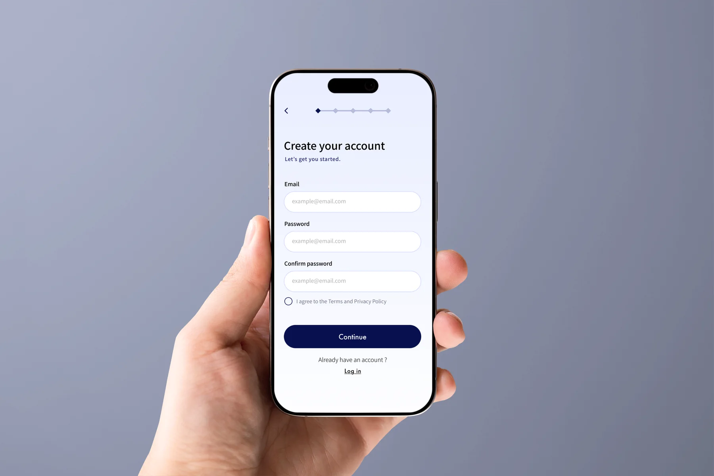
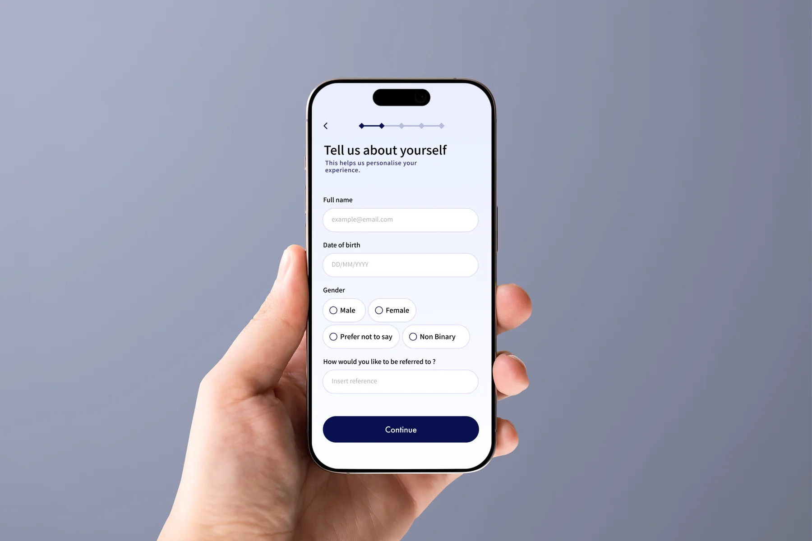
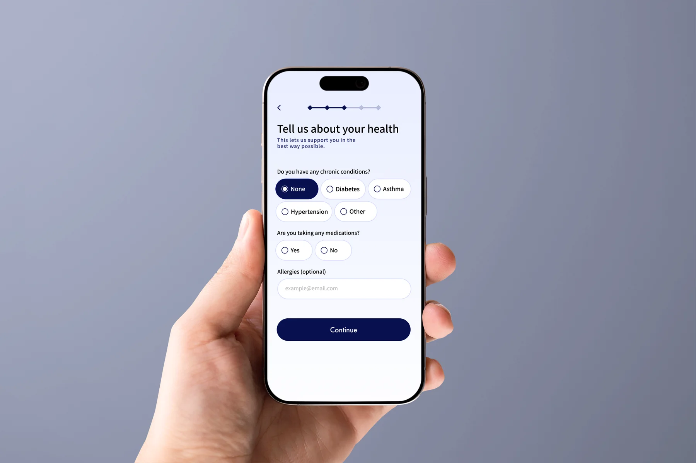
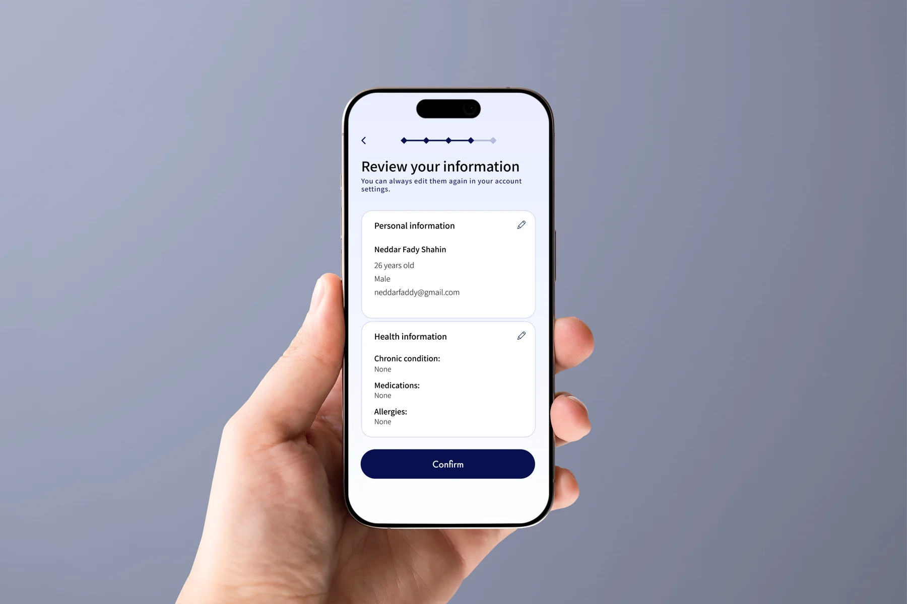
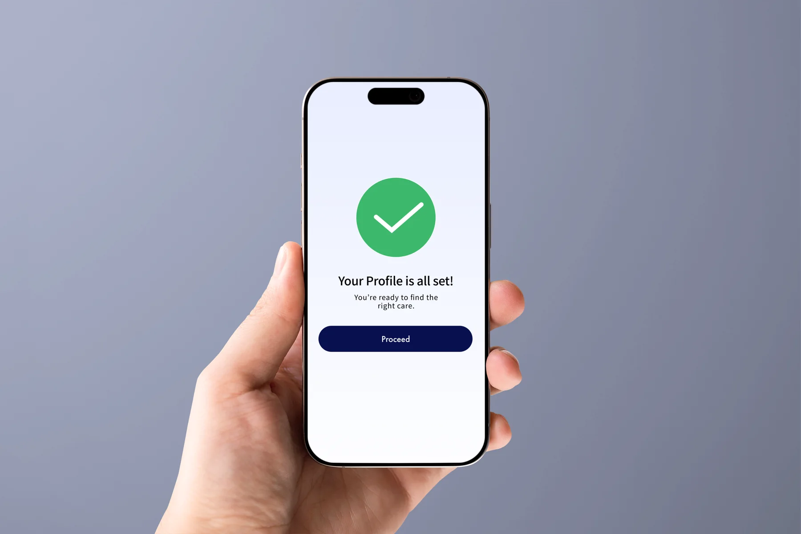


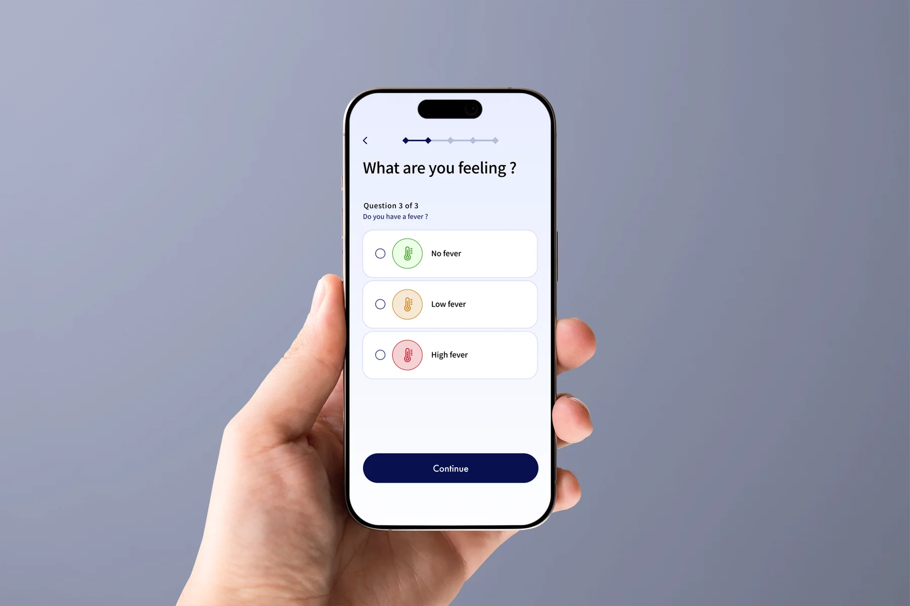


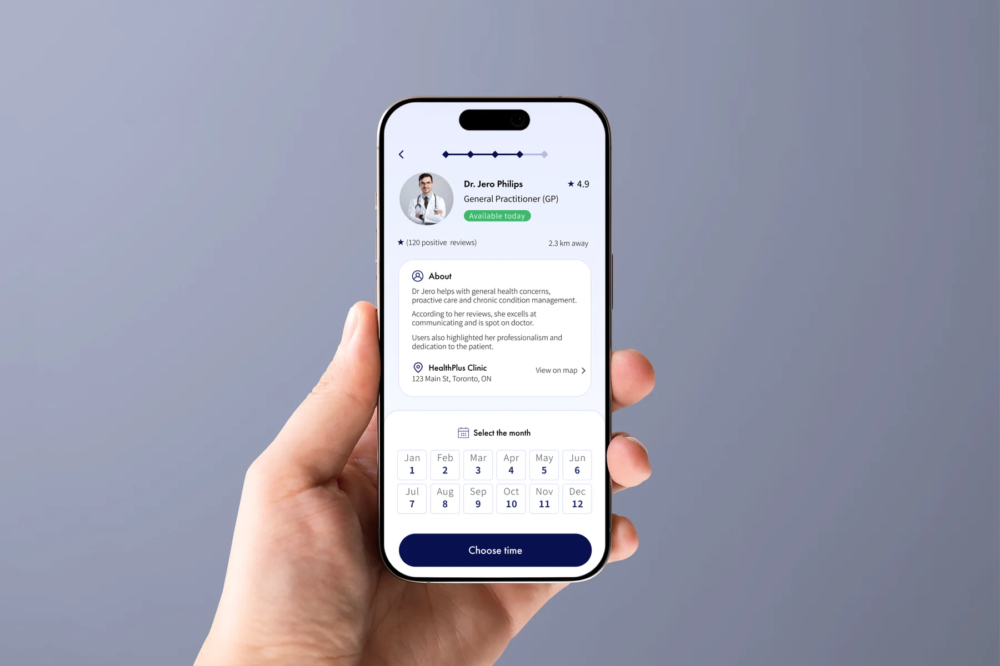

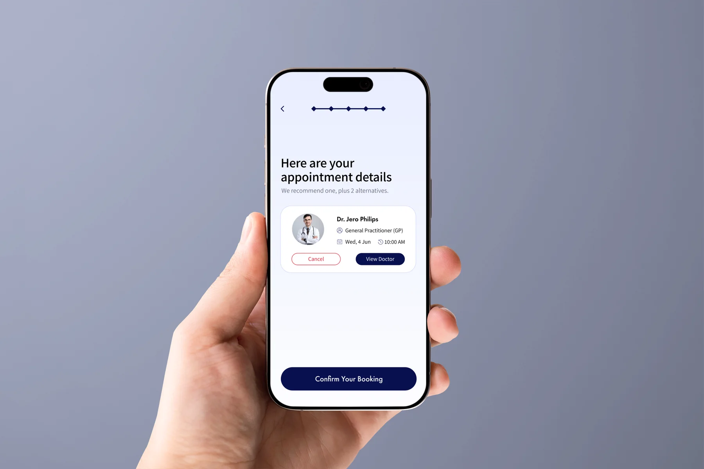
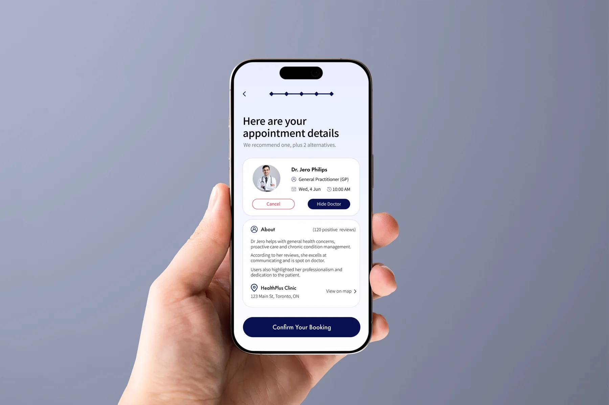


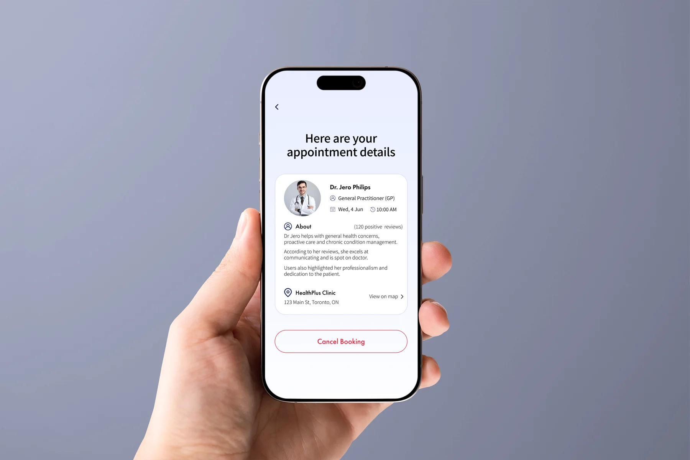
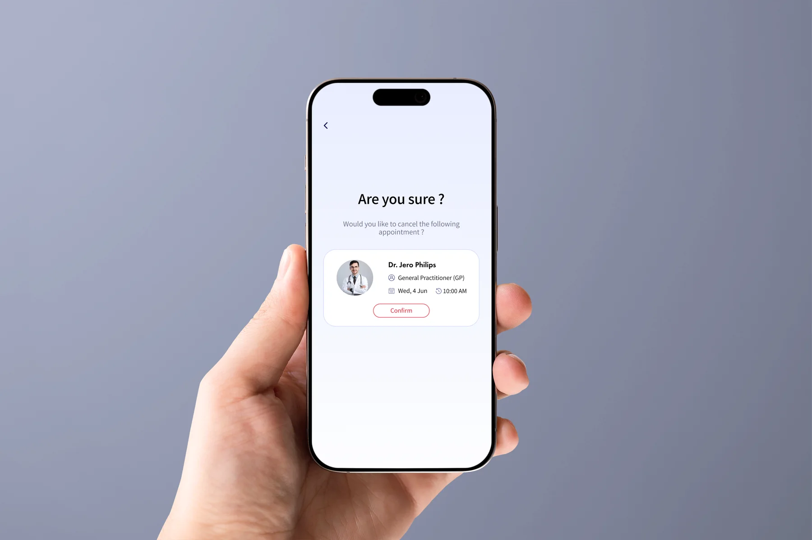
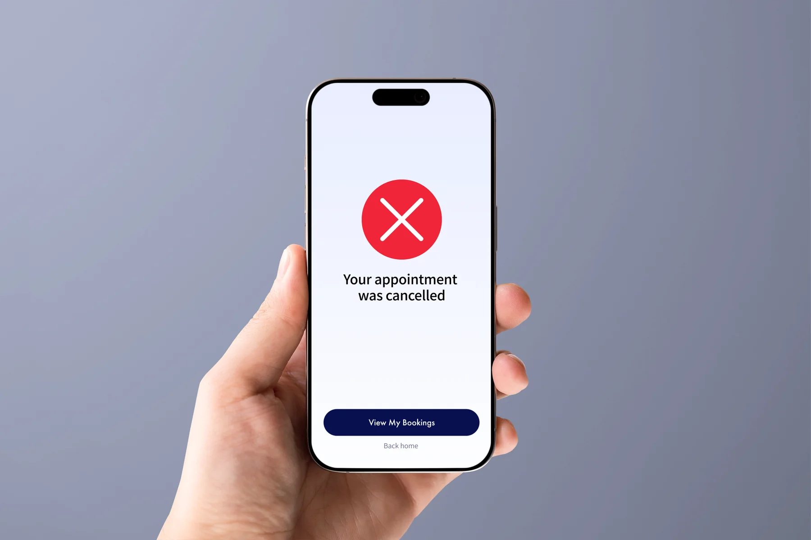
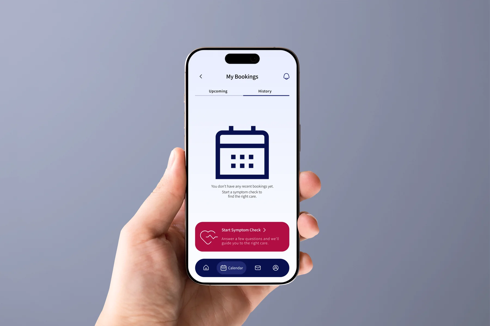
Symptom search gives people scary diagnosis lists when they really need direction.
Ask for symptoms and context, recommend a care type, then show doctors that match the next step.
The flow reduces guesswork before booking and makes comparison easier to scan.
The Problem
Too many options. No clear next step.
Symptom searches return diagnoses, not directions. Booking platforms show too many options with no way to know which is right. The gap is not medical information - it is someone telling you where to go.
Wrong specialty, wasted time
Many patients do not see the right specialist first, leading to delays in getting actual care.
Symptom checkers cause anxiety
Online symptom guidance produces inaccurate results that leave users more worried than when they started.
Booking UX is broken
Online medical forms are confusing and do not assess the patient's situation, pushing people away from digital booking.
Nobody gives direction
Platforms show doctors. Nobody tells you which type you need before showing them.
High-stakes choice, low confidence
Choosing the wrong care path feels risky, so users need reassurance before committing to a doctor or appointment.
No recovery path
If a recommendation feels wrong, users need a clear way to compare alternatives, go back, or go back without losing context.
Research
Different users. Same wall.
Each person described a different health situation, but the same UX failure kept appearing: too many options, too much uncertainty, and no clear next step.
"I waited several days before doing anything. Searching online made me more anxious because I still did not know which specialist to see."
User Interview - Isabella, 29
"I can book online, but I do not fully trust the result unless I understand why that doctor fits my situation."
User Interview - Adam, 35
"When there are too many doctors, I start comparing everything and end up delaying the appointment."
User Interview - Margaret, 52
Needs simple guidance
Does not know what specialist to see. Backs away from online booking when overwhelmed.
Needs trust signals
Takes online appointments but trusts them less. Needs credentials, distance, and a reason before committing.
Needs a safer choice
Researches symptoms thoroughly, but wants the interface to reduce worry instead of adding more decisions.
Symptom
Search
Anxiety
Delay
Guess
Doctor
Trust & Control
The interface explains why before asking users to commit.
The screens build confidence through a visible care recommendation, manual doctor comparison, and clear confirmation states.
Care type appears before doctor choice
The result screen recommends a care type first, then shows doctors that match that direction.
The “Why this?” card gives context
The user can see why a General Practitioner is suggested before comparing individual doctors.
More doctors stays available
The recommendation narrows the path, but the user can still open a fuller doctor list and compare alternatives.
Destructive actions ask twice
Cancellation uses a confirmation screen before changing the booking state, so users do not lose an appointment by mistake.
The Flow
Symptoms to care type to booking.
The app asks for context, narrows the problem, recommends a care type, then supports booking.
Profile
Symptom Input
Questions
Care Type
Doctor Results
Confirmation
Final Design
Profile before symptoms.
Health information is collected upfront - when the user is calm - so the symptom flow stays fast when it matters.
A short health setup
The user adds basic context before starting a symptom flow.
Low-pressure questions
The layout keeps each step narrow so it does not feel like a medical form dump.
Less typing during stress
The app avoids asking for background details when the user is already worried about symptoms.
Final Design
Free text first. Structure second.
Free text first, structured questions second. The app opens with freedom, then narrows with multiple choice.
A two-part symptom flow
The user describes the issue, then answers focused questions to help route the next step.
Expression before structure
People can say what is wrong in their own words before the interface starts narrowing the path.
Less anxious guessing
The user does not have to choose a specialty before the app understands the situation.
Final Design
Comparison before commitment.
The booking screen keeps doctor choice practical: nearby, available, credentialed, and tied to the recommended care type.
A filtered booking surface
The doctor list appears after the care type is clear, with the strongest decision details visible.
Commitment needs proof
Credentials, distance, and availability are placed before the final booking action.
Too many doctor cards
The user sees a smaller, more useful set instead of browsing a directory while unsure.
Final Design
Next steps stay visible.
The final screen repeats the appointment, location, care type, and prep notes so the user knows exactly what happens next.
A next-step summary
The confirmation collects the appointment, care type, address, and prep notes in one place.
Reduce second guessing
The strongest details are repeated after booking because users may still feel unsure.
Unclear after-booking state
The user leaves with a clear appointment and a short list of things to bring or do.
Final Design
Bookings stay manageable after confirmation.
Users can return to upcoming appointments, review details, cancel when needed, and understand the empty history state without leaving the booking area.
Upcoming and history states
The calendar area supports active appointments, detailed booking states, cancellation, and an empty history state.
Cancellation gets friction
The destructive action asks for confirmation, then gives a clear success state and routes the user back to bookings or home.
No dead-end booking states
Every booking outcome keeps a next action visible, so users are not stranded after confirming or cancelling.
Outcome Logic
What the redesign changes in the user journey.
This is a self-directed case study, so the outcome is framed through reduced uncertainty, clearer decision order, and stronger after-action states.
BeforeAfter
User chooses a doctor type before knowing what care they need.User describes symptoms first, then receives a care-type recommendation.
Doctor lists appear with little context.Doctor cards are shown after the app explains the recommended next step.
Booking confirmation is just an endpoint.Confirmation repeats doctor, time, location, care type, and prep notes.
Cancellation can become a dead end.Cancellation has confirmation, success feedback, and routes back to bookings or home.
What Changed
The booking flow got safer to scan.
Open with free text — Users express themselves before being guided because jumping straight to multiple choice feels presumptuous when someone is anxious.
The recommendation explains itself — The result screen shows a care type, suitability cue, and “Why this?” card before asking users to compare doctors.
Direction before doctor choice — Some users only need to know whether a GP or specialist makes sense before browsing individual doctors.
Reflection
What I would test next.
CareRoute needs trust validation because healthcare guidance has a lower tolerance for vague UI.
Direction beats diagnosis — The product is strongest when it helps users choose where to go, not what they have.
Recommendation language — I would test whether users understand care type suggestions without reading them as medical certainty.
Doctor comparison depth — Add stronger filtering for distance, availability, credentials, language, and insurance.